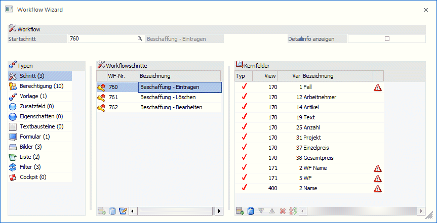
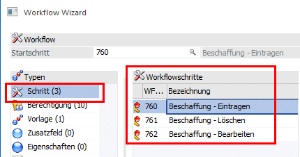
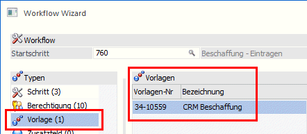
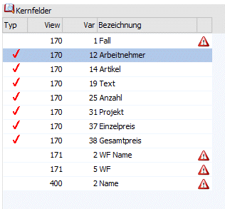
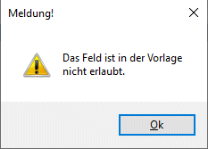
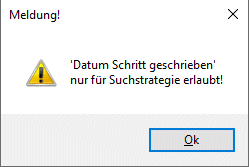
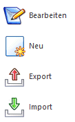

Der Workflow Wizard kann in der Applikation WinLine INFO über den Menüpunkt…
1 CRM
1 Workflow Wizard
… aufgerufen werden. In diesem Menüpunkt bestehen die Möglichkeiten:
ü Neue Workflows zu erstellen
ü Workflows zu bearbeiten
ü Workflows zu exportieren
ü Workflows zu importieren
Achtung
Der Workflow-Wizard und der Workflow-Editor können nicht gleichzeitig geöffnet sein.
Der Fensterinhalt teilt sich in 3 Bereiche die abhängig der jeweiligen Tätigkeit (Workflows erstellen, bearbeiten, exportieren, importieren, kopieren) unterschiedliche Funktionalitäten bieten.

Ø Typen
In dieser Tabelle werden die verschiedenen Objekttypen angezeigt, die zu einem Workflow möglich sind. In Klammer gesetzt werden zu jedem Objekttyp die Anzahl an bereits vorhandenen Objekten angezeigt.
Durch Anwählen eines Objekttyps werden die zugehörigen Objekte in der mittleren Tabelle dargestellt.
Beispiele
Durch Anwahl des Objekttyps "Schritt" werden in der mittleren Tabelle die Workflowschritte zum gewählten Workflow (definiert durch den zuvor ausgewählten Workflow-Startschritt) angezeigt.

Durch Anwahl des Objekttyps "Vorlage" werden in der mittleren Tabelle jene Vorlagen angezeigt, die in den jeweiligen Workflowschritten hinterlegt sind.

In der rechten Tabelle werden Informationen zum gewählten Objekt angezeigt. D.h. z.B. zum Objekt "Schritt" die Kernfelder, zum Objekt "Vorlage" jene Felder die in der Vorlage enthalten sind, oder zum Objekt "Liste" jene Variablen, die in der Liste enthalten sind.
Ø Kernfelder
In der Tabelle auf der rechten Seite werden die so genannten Kernfelder - jene Felder die im gewählten Workflow Verwendung finden - angezeigt.
Neben der Herkunft der Felder und den Namen der Felder (Spalte "Bezeichnung" entspricht jenem Eintrag der in der Vorlage hinterlegt ist) wird auch angezeigt, ob ein Kernfeld in einer Vorlage bzw. List-Liste verwendet wird. Dies erfolgt in der Spalte "Typ" mittels Häkchen.

In einer weiteren Spalte wird mittels eigenem Symbol angezeigt, dass ein Kernfeld nicht in einer Vorlage verwendet werden kann. Mittels Doppelklick auf dieses Symbol wird ein weiterer Hinweis dazu gezeigt.


Beim Öffnen des Menüpunktes befindet sich der Workflow-Wizard im "Bearbeiten"-Modus. D.h. bestehende Workflows können damit bearbeitet werden. Der jeweils benötigte Modus kann durch Auswahl über den eigenen Button in der Ribbonleiste gewählt werden.
